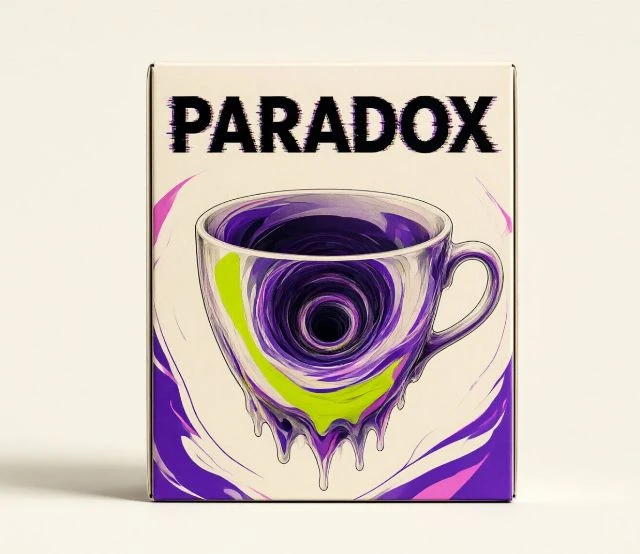
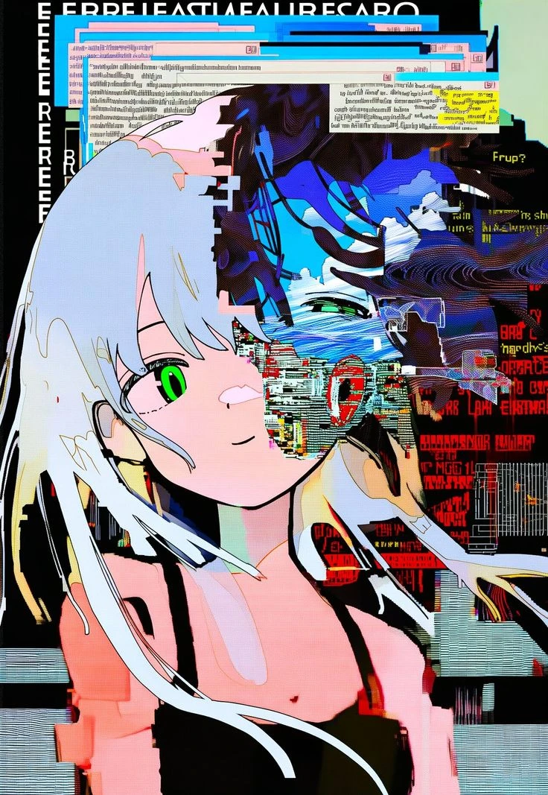
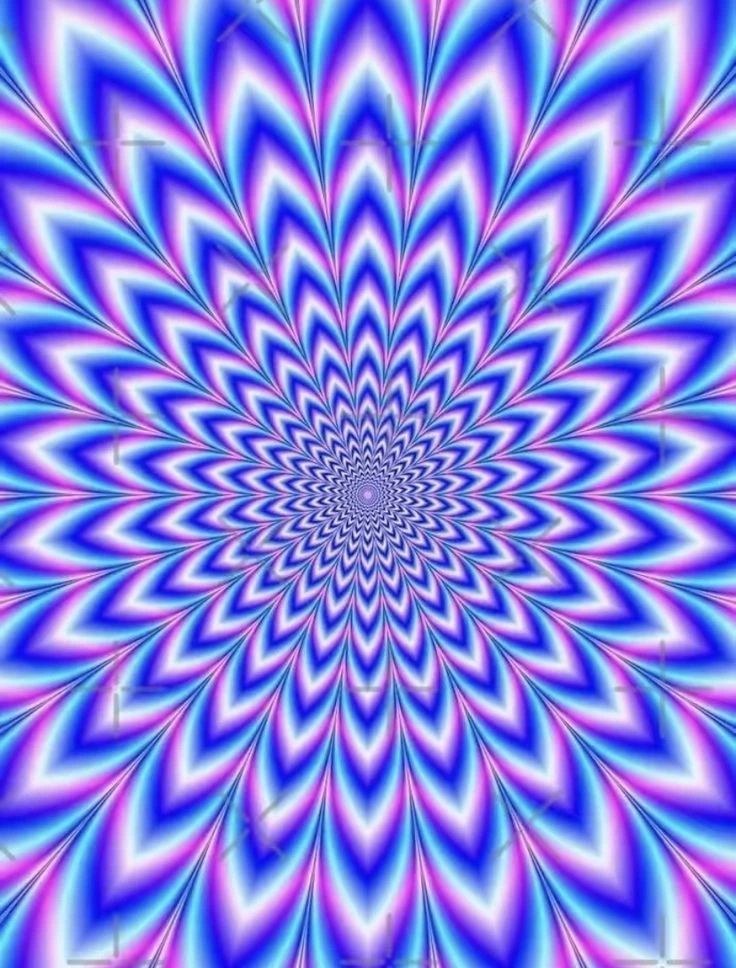
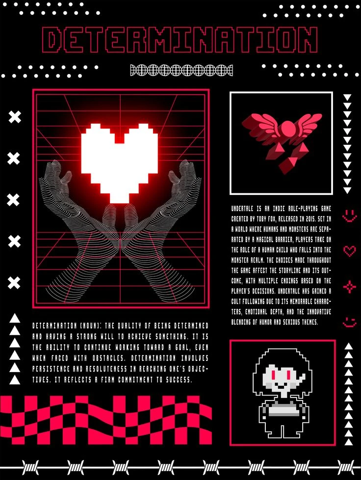
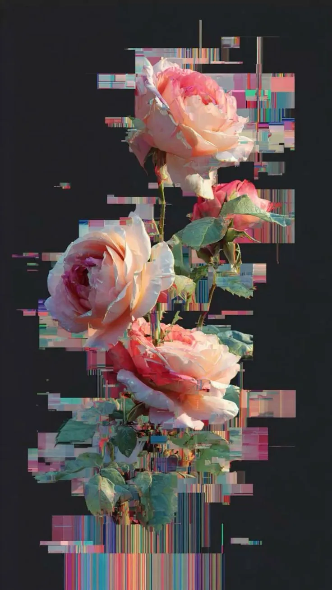
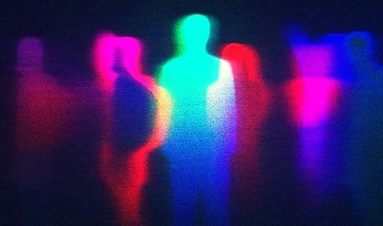
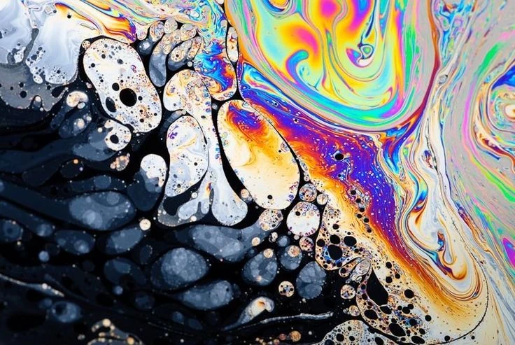

ЧАЙ, КОТОРЫЙ ЛОМАЕТ РЕАЛЬНОСТЬ
Классический слой: уют, тепло, вечер, плед, замедление, ритуал, дом.
Наш слой: чай как переключатель состояния. Не просто расслабление, а смена реальности.
Парадокс в том, что самый бытовой напиток может стать порталом в странное. Мы берем привычный ритуал и превращаем его в маленькое приключение сознания.
Анализ материалов для выбора идеального носителя нашей идеи.
Классика премиум-сегмента.
Идеален для сложной графики.
Прозрачность и эстетика.
Эко-стиль и минимализм.
«Парадокс: самая обычная упаковка несёт самый странный визуал».
Ощущение «знакомое, но сдвинутое». Мы не пугаем — мы интригуем. Целевая аудитория: креативные люди 18–35 лет, уставшие от одинаковых полок в супермаркетах.
Картонная коробка с оптической иллюзией. Чашка, которая одновременно является порталом в другую реальность. Текстура стекающей жидкости, кислотные акценты и глитч-типографика.

Концепт-мокап: чашка-портал с эффектом плавления реальности.
Сюрреализм / Оптические иллюзии / Психоделика 70-х в современной обработке.






Самый скучный напиток на полке.
Самый странный — в твоей чашке.
«Заваривать 3 минуты.
Не гарантируем, что реальность останется прежней.»